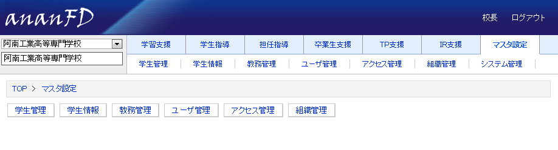

Programmer's Reference Guide
マスタ設定
マスタ設定のＴＯＰ画面である。（現在便宜上、コマンドボタンエリアにサブメニューを並べてある。）
・ユーザは、マスタ設定の設定データを参照できる。
・admin権限ユーザは、マスタ設定（アクセス管理を除く）のデータを作成・編集・削除ができる。
・アクセス管理においては、そのグループ・役職の登録ユーザのみが追加削除できる。（admin権限ユーザでも編集不可）
・admin権限ユーザには、システム管理がサブメニュー表示される。
マスタ設定
マスタ設定

更新情報